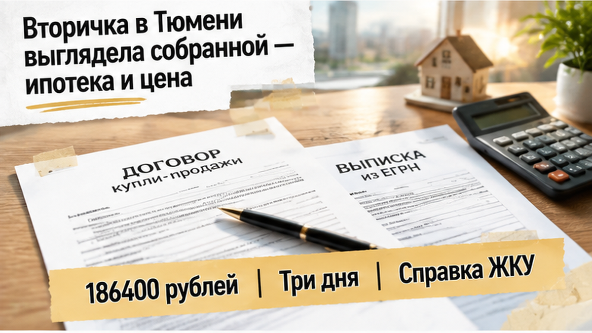
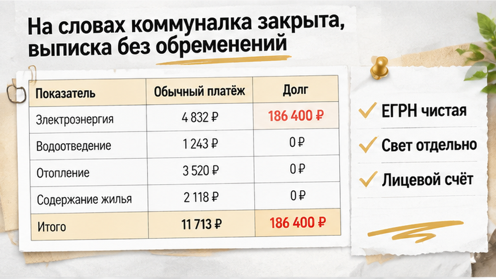
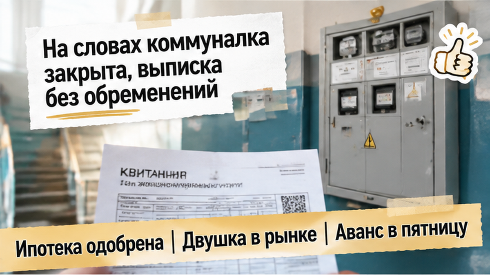
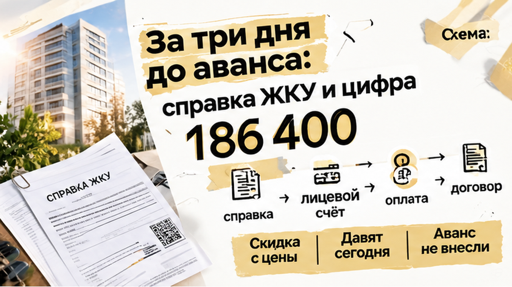
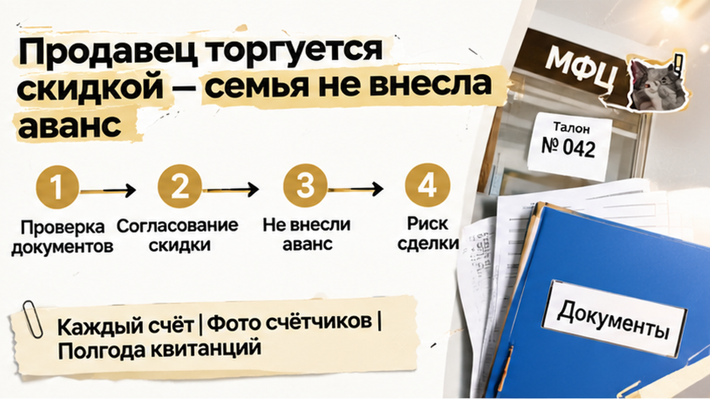
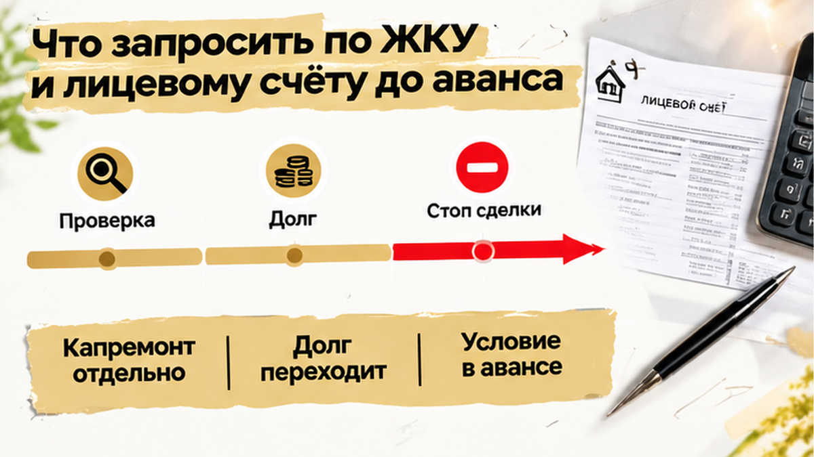
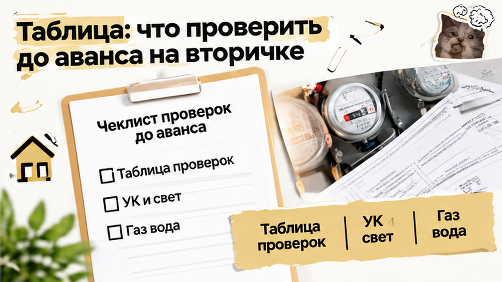

За три дня до аванса в 350 тысяч семья из Тюмени узнала, что на двушке висит долг за свет в 186 400 рублей, и остановила сделку. Квартиру на вторичке выбрали в середине сентября: школа рядом, ипотека одобрена, продавец торопил с задатком. Аванс назначили на пятницу, а по вечерам на кухне уже спорили, в какой комнате будет детская. Во вторник пришла справка по лицевому счёту, и одна строка в ней перечеркнула весь план. Продавец сначала свалил всё на ошибку энергосбыта, потом предложил скидку и подписать «сегодня, пока не передумали». Деньги в итоге остались у семьи, а квартира вернулась в объявления.
Я Святослав Шакин, The Риэлтор, Тюмень. Разбираю вторичку до аванса, а не после перевода денег. Смотреть разборы и задать вопрос можно в Telegram и MAX.

Со стороны это была спокойная, правильная сделка. Семья долго копила на первый взнос. Банк одобрил ипотеку, но одобрение действует ограниченное время, и хотелось успеть, пока условия не поменялись. Двушка подходила почти по всем пунктам: нормальный этаж, жилое состояние, садик и школа в пешей доступности. Цена была в рынке, без той странной «сладости», от которой сразу хочется насторожиться.
Именно такие квартиры и расслабляют. Цена не бросовая, продавец не прячется, документы показывает сам, и кажется, что проверять тут нечего. Люди смотрят на окна, трубы и стены, считают платёж по ипотеке. Коммуналку оставляют на потом: мелочь, продавец закроет перед сделкой. Родители рассуждали так же: главное, чтобы банк одобрил квартиру, а счета подождут.
Продавец торопил мягко, голос не повышал. Говорил, что есть второй покупатель, который «готов хоть завтра», и что задаток лучше внести до выходных. Семья решила вариант не упускать и поставила аванс на пятницу.


На вопрос про долги продавец ответил одной фразой: «Всё оплачено, сам плачу, хвостов нет». И положил на стол выписку из ЕГРН. Это официальная бумага из реестра, где видно, кто собственник и нет ли на квартире залога или ареста. В выписке было чисто: один собственник, обременений нет. Для семьи это прозвучало почти как печать качества: раз государство ничего не видит, значит, и смотреть не на что.
Вот здесь и ловушка, про которую редко говорят по-человечески. Выписка показывает права на квартиру, но не показывает долги за свет, воду и отопление. Эти долги живут отдельно: на лицевом счёте в управляющей компании и у поставщика электроэнергии. В реестре они не видны, пока дело не дошло до суда и ареста. Похожий расклад я уже разбирал, когда продавец принёс справку о закрытии ипотеки, а банк всё ещё держал залог. Это история про справку, которая не совпала с реальностью.
Чистая строка в ЕГРН ещё не гарантирует спокойную сделку. Иногда всё решает то, чего в этой строке нет, как в случае, когда ипотеку одобрили, а регистрацию отменили. Поэтому до аванса я попросил семью взять не только выписку, но и справки по каждому лицевому счёту. Справки должны прийти от тех, кто выставляет счета, а не со слов продавца. Продавец поморщился, сказал, что «это лишнее», но спорить не стал. В понедельник справки заказали.

Я попросил продавца заказать свежую справку об отсутствии долга по ЖКУ, отдельно по каждому поставщику. Не квитанцию за прошлый месяц с галочкой «оплачено», а выписку по лицевому счёту за свет. Продавец удивился: «Зачем? Я же говорил, всё закрыто». Но заказал. К вечеру бумага пришла, и семья перечитала её несколько раз. В строке «задолженность» стояло 186 400 рублей за электроэнергию.
Такая сумма не набегает за пару забытых месяцев. Этот долг копился долго и тихо. Внятно объяснить, откуда он, продавец не смог. Сначала сказал, что поставщик ошибся. Потом что «там перерасчёт, я разберусь». Потом признал, что пару лет платил «как получалось». Жена молча держала справку, муж считал в телефоне, сколько это месяцев их ипотечного платежа. До аванса в 350 тысяч оставалось три дня.
Почему это не мелочь, объясню по-простому. По закону долг за свет, который набежал до покупки, остаётся на прежнем хозяине. Новый собственник отвечает только за то, что нагорит после регистрации. Но в жизни долг числится за квартирой, а не за человеком. Поставщик видит просрочку и может ограничить подачу света. Новые владельцы потом месяцами пишут письма, собирают бумаги и доказывают, что долг не их. А семья с ребёнком в первый вечер в новой двушке хочет включить свет, а не сочинять претензии.
Есть и второй момент, о котором обычно не думают. Если человек пару лет не платил за свет, это кое-что говорит о его деньгах и о том, как он ведёт дела. Я уже разбирал похожую ловушку: продавец показал справку о закрытии ипотеки, а банк всё ещё держал залог. Схема одна и та же: на словах всё чисто, а документ говорит обратное.
Такие разборы сделок до аванса я выкладываю в Telegram и MAX: настоящие справки, настоящие цифры и что спросить у продавца. Подписывайтесь, пока вы ещё смотрите квартиры, а не подписываете договор.

На следующий день продавец позвонил сам и предложил «компромисс». Долг он закроет потом, после сделки, а в знак доброй воли скинет часть суммы с цены. Условие одно: аванс подписываем сегодня, потому что «есть ещё покупатели, смотрят в выходные». Проблему не решают, её переносят на потом, а сверху кладут скидку, чтобы было не так страшно.
Семья колебалась, и я их понимаю. Ипотека одобрена, квартира подходит: две комнаты, школа рядом, ребёнку не менять садик. Искать заново значит снова отдавать выходные показам и нервничать, что одобрение банка не вечное. Скидка выглядела подарком. Но скидка и закрытый долг — разные вещи. Скидку дают один раз, в день сделки. А 186 400 никуда не денутся и будут висеть на лицевом счёте квартиры, где вы уже живёте. Так было и в истории, где скидку в два миллиона обещали, а в квартире прятали риск: щедрая уступка часто прикрывает то, что продавец решать не хочет.
Мы предложили нормальный порядок: сначала продавец гасит долг и получает новую справку с нулём, и только потом семья вносит аванс. Продавец отказался. Сказал, что денег на погашение сейчас нет, закроет с аванса. То есть свой свет он собирался оплатить деньгами покупателей, до регистрации и без всяких гарантий. На этом разговор закончился.
Аванс семья не внесла. 350 тысяч остались у них на счёте, а не в расписке у человека с долгом почти в двести тысяч и мутной историей, откуда он взялся. Бронь сорвалась, выходные снова ушли на показы. Зато они не попали в ситуацию, когда деньги уже отданы, продавец «разбирается с поставщиком», а сделка висит неделями. Справка стоила им одного звонка и одного вечера ожидания.
Если перед авансом всплывает долг за свет в 186 тысяч, а продавец давит «подпишем сегодня», вы бы внесли аванс или ушли сразу? Пишите в комментариях, особенно если сами попадали в похожую историю с коммуналкой на вторичке.
Эти 186 400 ₽ всплыли за три дня до аванса. Могли всплыть и после, когда 350 тысяч уже у продавца. Пока деньги у вас, вы спокойно уходите, а продавец уговаривает. После перевода уговаривать будете вы. Поэтому справки по коммуналке берут до аванса, а не накануне регистрации.
Главное, на чём споткнулась семья: у квартиры не один лицевой счёт. Лицевой счёт — это номер, на который приходят квитанции. Отдельный номер бывает у управляющей компании, за свет, газ, воду и капремонт. Продавец показал чистую квитанцию от УК, а за электричество платили другому поставщику, и туда никто не заглядывал. Просите справку об отсутствии долга по каждому счёту и квитанции за последние полгода по каждому поставщику, а не одну «для примера». На месте сфотографируйте счётчики. Если цифры на них сильно больше, чем в последней оплате, долг копился месяцами.

Про капремонт отдельно. Долг за свет и воду по закону остаётся на прежнем хозяине, а долг по взносам на капремонт переходит к новому собственнику. Со «старым» светом тоже бывают неприятности: могут отключить, и доказывать, что это не ваш долг, придётся вам. Поэтому условие вписывают прямо в соглашение об авансе. Продавец гасит долги до сделки и приносит справку с нулём. Не погасил — аванс возвращается полностью.
| Что | Где взять | Что должно насторожить |
|---|---|---|
| Справка об отсутствии долга по УК | Управляющая компания или ТСЖ | Продавец тянет с запросом или приносит только квитанцию |
| Долг за электроэнергию | Поставщик электроэнергии, по номеру лицевого счёта | Отдельный счёт, о котором «забыли», долг больше чем за пару месяцев |
| Газ, вода, отопление | У каждого поставщика отдельно | Квитанции не за все месяцы, пропуски в оплате |
| Взносы на капремонт | Региональный фонд капремонта | Любой долг: он переходит к новому собственнику |
| Показания счётчиков | Фото на месте и сверка с квитанцией | На счётчике сильно больше, чем в последней оплате |
| Условие о долгах в соглашении об авансе | Текст соглашения до подписи | Отказ вписать возврат аванса, если долги не погашены |

Одобрение ипотеки у семьи сохранилось, 350 тысяч остались на счёте, а не в расписке у продавца с долгом за свет. Потеряли две недели на новые показы — зато не вошли в сделку, где коммунальный хвост решают уже после аванса. Вторичку в Тюмени можно брать спокойно, если пакет по ЖКУ собран до перевода денег.